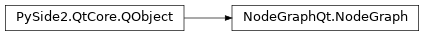
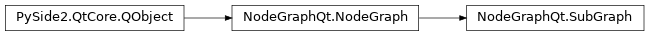
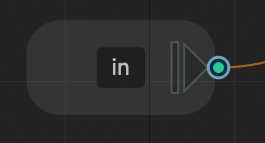

Graphs
Classes:
|
The |
|
The |
NodeGraph
- class NodeGraphQt.NodeGraph(parent=None, **kwargs)
The
NodeGraphclass is the main controller for managing all nodes and the node graph.
Attributes:
nodes_registered(*args, **kwargs)Signal triggered when a node is registered into the node graph.
node_created(*args, **kwargs)Signal triggered when a node is created in the node graph.
nodes_deleted(*args, **kwargs)Signal triggered when nodes have been deleted from the node graph.
node_selected(*args, **kwargs)Signal triggered when a node is clicked with the LMB.
node_selection_changed(*args, **kwargs)Signal triggered when the node selection has changed.
node_double_clicked(*args, **kwargs)Signal triggered when a node is double clicked and emits the node.
port_connected(*args, **kwargs)Signal triggered when a node port has been connected.
port_disconnected(*args, **kwargs)Signal triggered when a node port has been disconnected.
property_changed(*args, **kwargs)Signal is triggered when a property has changed on a node.
data_dropped(*args, **kwargs)Signal is triggered when data has been dropped to the graph.
session_changed(*args, **kwargs)Signal is triggered when session has been changed.
context_menu_prompt(*args, **kwargs)Signal is triggered just before a context menu is shown.
The model used for storing the node graph data.
Return the node factory object used by the node graph.
The node graph widget for adding into a layout.
Returns node graph undo history list widget.
Returns if the node graph controller is the root graph.
Returns expanded group node sub graphs.
Methods:
toggle the node search widget visibility.
show()Show node graph widget this is just a convenience function to
NodeGraph.widget.show().close()Close node graph NodeViewer widget this is just a convenience function to
NodeGraph.widget.close().viewer()Returns the internal view interface used by the node graph.
scene()Returns the
QGraphicsSceneobject used in the node graph.Return the node graph background color.
set_background_color(r, g, b)Set node graph background color.
Return the node graph grid color.
set_grid_color(r, g, b)Set node graph grid color.
set_grid_mode([mode])Set node graph background grid mode.
add_properties_bin(prop_bin)Wire up a properties bin widget to the node graph.
Returns the undo stack used in the node graph.
Clears the undo stack.
begin_undo(name)Start of an undo block followed by a
NodeGraph.end_undo().end_undo()End of an undo block started by
NodeGraph.begin_undo().Returns the context menu for the node graph.
Returns the context menu for the nodes.
get_context_menu(menu)Returns the context menu specified by the name.
set_context_menu(menu_name, data)Populate a context menu from serialized data.
set_context_menu_from_file(file_path[, menu])Populate a context menu from a serialized json file.
disable_context_menu([disabled, name])Disable/Enable context menus from the node graph.
acyclic()Returns true if the current node graph is acyclic.
set_acyclic([mode])Enable the node graph to be a acyclic graph.
Returns if pipe collision is enabled.
set_pipe_collision([mode])Enable/Disable pipe collision.
Returns if pipe slicing is enabled.
set_pipe_slicing([mode])Enable/Disable pipe slicer.
Returns the current pipe layout style.
set_pipe_style([style])Set node graph pipes to be drawn as curved (default), straight or angled.
Return the current node graph layout direction.
set_layout_direction(direction)Sets the node graph layout direction to horizontal or vertical.
Sets the zoom level to fit selected nodes.
Reset the zoom level
set_zoom([zoom])Set the zoom factor of the Node Graph the default is
0.0get_zoom()Get the current zoom level of the node graph.
center_on([nodes])Center the node graph on the given nodes or all nodes by default.
Centers on the current selected nodes.
Return a list of all node types that have been registered.
register_node(node[, alias])Register the node to the
NodeGraph.node_factory()register_nodes(nodes)Register the nodes to the
NodeGraph.node_factory()create_node(node_type[, name, selected, ...])Create a new node in the node graph.
add_node(node[, pos, selected, push_undo])Add a node into the node graph.
delete_node(node[, push_undo])Remove the node from the node graph.
remove_node(node[, push_undo])Remove the node from the node graph.
delete_nodes(nodes[, push_undo])Remove a list of specified nodes from the node graph.
extract_nodes(nodes[, push_undo, prompt_warning])Extract select nodes from it connections.
Return all nodes in the node graph.
Return all selected nodes that are in the node graph.
Select all nodes in the node graph.
Clears the selection in the node graph.
Inverts the current node selection.
get_node_by_id([node_id])Returns the node from the node id string.
get_node_by_name(name)Returns node that matches the name.
get_nodes_by_type(node_type)Return all nodes by their node type identifier.
get_unique_name(name)Creates a unique node name to avoid having nodes with the same name.
Returns the file path to the currently loaded session.
Clears the current node graph session.
Serializes the current node graph layout to a dictionary.
deserialize_session(layout_data)Load node graph session from a dictionary object.
save_session(file_path)Saves the current node graph session layout to a JSON formatted file.
load_session(file_path)Load node graph session layout file.
import_session(file_path)Import node graph session layout file.
copy_nodes([nodes])Copy nodes to the clipboard.
cut_nodes([nodes])Cut nodes to the clipboard.
Pastes nodes copied from the clipboard.
duplicate_nodes(nodes)Create duplicate copy from the list of nodes.
disable_nodes(nodes[, mode])Toggle nodes to be either disabled or enabled state.
Set the viewport to use QOpenGLWidget widget to draw the graph.
auto_layout_nodes([nodes, down_stream, ...])Auto layout the nodes in the node graph.
question_dialog(text[, title])Prompts a question open dialog with
"Yes"and"No"buttons in the node graph.message_dialog(text[, title])Prompts a file open dialog in the node graph.
load_dialog([current_dir, ext])Prompts a file open dialog in the node graph.
save_dialog([current_dir, ext])Prompts a file save dialog in the node graph.
expand_group_node(node)Expands a group node session in a new tab.
collapse_group_node(node)Collapse a group node session tab and it's expanded child sub graphs.
- nodes_registered(*args, **kwargs)
Signal triggered when a node is registered into the node graph.
- Parameters:
list[
NodeGraphQt.NodeObject]- Emits:
registered nodes
- node_created(*args, **kwargs)
Signal triggered when a node is created in the node graph.
- Parameters:
- Emits:
created node
- nodes_deleted(*args, **kwargs)
Signal triggered when nodes have been deleted from the node graph.
- Parameters:
list[str]
- Emits:
list of deleted node ids.
- node_selected(*args, **kwargs)
Signal triggered when a node is clicked with the LMB.
- Parameters:
- Emits:
selected node
- node_selection_changed(*args, **kwargs)
Signal triggered when the node selection has changed.
- Parameters:
list[
NodeGraphQt.NodeObject], list[NodeGraphQt.NodeObject]- Emits:
selected node, deselected nodes.
- node_double_clicked(*args, **kwargs)
Signal triggered when a node is double clicked and emits the node.
- Parameters:
- Emits:
selected node
- port_connected(*args, **kwargs)
Signal triggered when a node port has been connected.
- Parameters:
- Emits:
input port, output port
- port_disconnected(*args, **kwargs)
Signal triggered when a node port has been disconnected.
- Parameters:
- Emits:
input port, output port
- property_changed(*args, **kwargs)
Signal is triggered when a property has changed on a node.
- Parameters:
NodeGraphQt.BaseNode, str, object- Emits:
triggered node, property name, property value
- data_dropped(*args, **kwargs)
Signal is triggered when data has been dropped to the graph.
- Parameters:
PySide2.QtCore.QMimeData,PySide2.QtCore.QPoint- Emits:
mime data, node graph position
- session_changed(*args, **kwargs)
Signal is triggered when session has been changed.
- Parameters:
str
- Emits:
new session path
Signal is triggered just before a context menu is shown.
- Parameters:
NodeGraphQt.NodeGraphMenuorNodeGraphQt.NodesMenu,NodeGraphQt.BaseNode- Emits:
triggered context menu, node object.
- property model
The model used for storing the node graph data.
- Returns:
node graph model.
- Return type:
NodeGraphQt.base.model.NodeGraphModel
- property node_factory
Return the node factory object used by the node graph.
- Returns:
node factory.
- Return type:
NodeFactory
- property widget
The node graph widget for adding into a layout.
- Returns:
node graph widget.
- Return type:
NodeGraphWidget
- property undo_view
Returns node graph undo history list widget.
- Returns:
node graph undo view.
- Return type:
PySide2.QtWidgets.QUndoView
- close()
Close node graph NodeViewer widget this is just a convenience function to
NodeGraph.widget.close().
- viewer()
Returns the internal view interface used by the node graph.
Warning
Methods in the
NodeViewerare used internally byNodeGraphQtcomponents to get the widget useNodeGraph.widget.See also
NodeGraph.widgetto add the node graph widget into aPySide2.QtWidgets.QLayout.- Returns:
viewer interface.
- Return type:
NodeGraphQt.widgets.viewer.NodeViewer
- scene()
Returns the
QGraphicsSceneobject used in the node graph.- Returns:
node scene.
- Return type:
NodeGraphQt.widgets.scene.NodeScene
- set_background_color(r, g, b)
Set node graph background color.
- Parameters:
r (int) – red value.
g (int) – green value.
b (int) – blue value.
- set_grid_color(r, g, b)
Set node graph grid color.
- Parameters:
r (int) – red value.
g (int) – green value.
b (int) – blue value.
- set_grid_mode(mode=None)
Set node graph background grid mode.
(default:
NodeGraphQt.constants.ViewerEnum.GRID_DISPLAY_LINES).See:
NodeGraphQt.constants.ViewerEnum1graph = NodeGraph() 2graph.set_grid_mode(ViewerEnum.CURVED.value)
- Parameters:
mode (int) – background style.
- add_properties_bin(prop_bin)
Wire up a properties bin widget to the node graph.
- Parameters:
prop_bin (NodeGraphQt.PropertiesBinWidget) – properties widget.
- undo_stack()
Returns the undo stack used in the node graph.
See also
- Returns:
undo stack.
- Return type:
QtWidgets.QUndoStack
- clear_undo_stack()
Clears the undo stack.
Note
Convenience function to
NodeGraph.undo_stack().clear()
- begin_undo(name)
Start of an undo block followed by a
NodeGraph.end_undo().- Parameters:
name (str) – name for the undo block.
- end_undo()
End of an undo block started by
NodeGraph.begin_undo().
Returns the context menu for the node graph.
Note
This is a convenience function to
NodeGraph.get_context_menu()with the argmenu="graph"- Returns:
context menu object.
- Return type:
Returns the context menu for the nodes.
Note
This is a convenience function to
NodeGraph.get_context_menu()with the argmenu="nodes"- Returns:
context menu object.
- Return type:
Returns the context menu specified by the name.
menu types:
"graph"context menu from the node graph."nodes"context menu for the nodes.
- Parameters:
menu (str) – menu name.
- Returns:
context menu object.
- Return type:
Populate a context menu from serialized data.
example of serialized menu data:
[ { 'type': 'menu', 'label': 'node sub menu', 'items': [ { 'type': 'command', 'label': 'test command', 'file': '../path/to/my/test_module.py', 'function': 'run_test', 'node_type': 'nodeGraphQt.nodes.MyNodeClass' }, ] }, ]
the
run_testexample function:def run_test(graph): print(graph.selected_nodes())
- Parameters:
menu_name (str) – name of the parent context menu to populate under.
data (dict) – serialized menu data.
Populate a context menu from a serialized json file.
menu types:
"graph"context menu from the node graph."nodes"context menu for the nodes.
- Parameters:
menu (str) – name of the parent context menu to populate under.
file_path (str) – serialized menu commands json file.
Disable/Enable context menus from the node graph.
menu types:
"all"all context menus from the node graph."graph"context menu from the node graph."nodes"context menu for the nodes.
- Parameters:
disabled (bool) – true to enable context menu.
name (str) – menu name. (default:
"all")
- acyclic()
Returns true if the current node graph is acyclic.
See also
- Returns:
true if acyclic (default:
True).- Return type:
bool
- set_acyclic(mode=True)
Enable the node graph to be a acyclic graph. (default:
True)See also
- Parameters:
mode (bool) – true to enable acyclic.
- pipe_collision()
Returns if pipe collision is enabled.
See also
To enable/disable pipe collision
NodeGraph.set_pipe_collision()- Returns:
True if pipe collision is enabled.
- Return type:
bool
- set_pipe_collision(mode=True)
Enable/Disable pipe collision.
When enabled dragging a node over a pipe will allow the node to be inserted as a new connection between the pipe.
See also
- Parameters:
mode (bool) – False to disable pipe collision.
- pipe_slicing()
Returns if pipe slicing is enabled.
See also
To enable/disable pipe slicer
NodeGraph.set_pipe_slicing()- Returns:
True if pipe slicing is enabled.
- Return type:
bool
- set_pipe_slicing(mode=True)
Enable/Disable pipe slicer.
When set to true holding down
Alt + Shift + LMB Dragwill allow node pipe connections to be sliced.
See also
- Parameters:
mode (bool) – False to disable the slicer pipe.
- pipe_style()
Returns the current pipe layout style.
See also
- Returns:
pipe style value.
NodeGraphQt.constants.PipeLayoutEnum- Return type:
int
- set_pipe_style(style=1)
Set node graph pipes to be drawn as curved (default), straight or angled.
1graph = NodeGraph() 2graph.set_pipe_style(PipeLayoutEnum.CURVED.value)
See:
NodeGraphQt.constants.PipeLayoutEnum
- Parameters:
style (int) – pipe layout style.
- layout_direction()
Return the current node graph layout direction.
Implemented in
v0.3.0See also
- Returns:
layout direction.
- Return type:
int
- set_layout_direction(direction)
Sets the node graph layout direction to horizontal or vertical. This function will also override the layout direction on all nodes in the current node graph.
Implemented in
v0.3.0Layout Types:

Warning
This function does not register to the undo stack.
- Parameters:
direction (int) – layout direction.
- fit_to_selection()
Sets the zoom level to fit selected nodes. If no nodes are selected then all nodes in the graph will be framed.
- set_zoom(zoom=0)
Set the zoom factor of the Node Graph the default is
0.0- Parameters:
zoom (float) – zoom factor (max zoom out
-0.9/ max zoom in2.0)
- get_zoom()
Get the current zoom level of the node graph.
- Returns:
the current zoom level.
- Return type:
float
- center_on(nodes=None)
Center the node graph on the given nodes or all nodes by default.
- Parameters:
nodes (list[NodeGraphQt.BaseNode]) – a list of nodes.
- registered_nodes()
Return a list of all node types that have been registered.
See also
To register a node
NodeGraph.register_node()- Returns:
list of node type identifiers.
- Return type:
list[str]
- register_node(node, alias=None)
Register the node to the
NodeGraph.node_factory()- Parameters:
node (NodeGraphQt.NodeObject) – node object.
alias (str) – custom alias name for the node type.
- register_nodes(nodes)
Register the nodes to the
NodeGraph.node_factory()- Parameters:
nodes (list) – list of nodes.
- create_node(node_type, name=None, selected=True, color=None, text_color=None, pos=None, push_undo=True)
Create a new node in the node graph.
See also
To list all node types
NodeGraph.registered_nodes()- Parameters:
node_type (str) – node instance type.
name (str) – set name of the node.
selected (bool) – set created node to be selected.
color (tuple or str) – node color
(255, 255, 255)or"#FFFFFF".text_color (tuple or str) – text color
(255, 255, 255)or"#FFFFFF".pos (list[int, int]) – initial x, y position for the node (default:
(0, 0)).push_undo (bool) – register the command to the undo stack. (default: True)
- Returns:
the created instance of the node.
- Return type:
- add_node(node, pos=None, selected=True, push_undo=True)
Add a node into the node graph. unlike the
NodeGraph.create_node()function this will not trigger theNodeGraph.node_createdsignal.- Parameters:
node (NodeGraphQt.BaseNode) – node object.
pos (list[float]) – node x,y position. (optional)
selected (bool) – node selected state. (optional)
push_undo (bool) – register the command to the undo stack. (default: True)
- delete_node(node, push_undo=True)
Remove the node from the node graph.
- Parameters:
node (NodeGraphQt.BaseNode) – node object.
push_undo (bool) – register the command to the undo stack. (default: True)
- remove_node(node, push_undo=True)
Remove the node from the node graph.
unlike the
NodeGraph.delete_node()function this will not trigger theNodeGraph.nodes_deletedsignal.- Parameters:
node (NodeGraphQt.BaseNode) – node object.
push_undo (bool) – register the command to the undo stack. (default: True)
- delete_nodes(nodes, push_undo=True)
Remove a list of specified nodes from the node graph.
- Parameters:
nodes (list[NodeGraphQt.BaseNode]) – list of node instances.
push_undo (bool) – register the command to the undo stack. (default: True)
- extract_nodes(nodes, push_undo=True, prompt_warning=True)
Extract select nodes from it connections.
- Parameters:
nodes (list[NodeGraphQt.BaseNode]) – list of node instances.
push_undo (bool) – register the command to the undo stack. (default: True)
prompt_warning (bool) – prompt warning dialog box.
- all_nodes()
Return all nodes in the node graph.
- Returns:
list of nodes.
- Return type:
list[NodeGraphQt.BaseNode]
- selected_nodes()
Return all selected nodes that are in the node graph.
- Returns:
list of nodes.
- Return type:
list[NodeGraphQt.BaseNode]
- get_node_by_id(node_id=None)
Returns the node from the node id string.
- Parameters:
node_id (str) – node id (
NodeObject.id)- Returns:
node object.
- Return type:
- get_node_by_name(name)
Returns node that matches the name.
- Parameters:
name (str) – name of the node.
- Returns:
node object.
- Return type:
- get_nodes_by_type(node_type)
Return all nodes by their node type identifier. (see:
NodeGraphQt.NodeObject.type_)- Parameters:
node_type (str) – node type identifier.
- Returns:
list of nodes.
- Return type:
list[NodeGraphQt.NodeObject]
- get_unique_name(name)
Creates a unique node name to avoid having nodes with the same name.
- Parameters:
name (str) – node name.
- Returns:
unique node name.
- Return type:
str
- current_session()
Returns the file path to the currently loaded session.
- Returns:
path to the currently loaded session
- Return type:
str
- serialize_session()
Serializes the current node graph layout to a dictionary.
- Returns:
serialized session of the current node layout.
- Return type:
dict
- deserialize_session(layout_data)
Load node graph session from a dictionary object.
- Parameters:
layout_data (dict) – dictionary object containing a node session.
- save_session(file_path)
Saves the current node graph session layout to a JSON formatted file.
- Parameters:
file_path (str) – path to the saved node layout.
- load_session(file_path)
Load node graph session layout file.
- Parameters:
file_path (str) – path to the serialized layout file.
- import_session(file_path)
Import node graph session layout file.
- Parameters:
file_path (str) – path to the serialized layout file.
- copy_nodes(nodes=None)
Copy nodes to the clipboard.
See also
- Parameters:
nodes (list[NodeGraphQt.BaseNode]) – list of nodes (default: selected nodes).
- cut_nodes(nodes=None)
Cut nodes to the clipboard.
Note
This function doesn’t not trigger the
NodeGraph.nodes_deletedsignal.See also
- Parameters:
nodes (list[NodeGraphQt.BaseNode]) – list of nodes (default: selected nodes).
- paste_nodes()
Pastes nodes copied from the clipboard.
- Returns:
list of pasted node instances.
- Return type:
list[NodeGraphQt.BaseNode]
- duplicate_nodes(nodes)
Create duplicate copy from the list of nodes.
- Parameters:
nodes (list[NodeGraphQt.BaseNode]) – list of nodes.
- Returns:
list of duplicated node instances.
- Return type:
list[NodeGraphQt.BaseNode]
- disable_nodes(nodes, mode=None)
Toggle nodes to be either disabled or enabled state.
See also
- Parameters:
nodes (list[NodeGraphQt.BaseNode]) – list of nodes.
mode (bool) – (optional) override state of the nodes.
- auto_layout_nodes(nodes=None, down_stream=True, start_nodes=None)
Auto layout the nodes in the node graph.
Note
If the node graph is acyclic then the
start_nodeswill need to be specified.- Parameters:
nodes (list[NodeGraphQt.BaseNode]) – list of nodes to auto layout if nodes is None then all nodes is layed out.
down_stream (bool) – false to layout up stream.
start_nodes (list[NodeGraphQt.BaseNode]) – list of nodes to start the auto layout from (Optional).
- question_dialog(text, title='Node Graph')
Prompts a question open dialog with
"Yes"and"No"buttons in the node graph.Note
Convenience function to
NodeGraph.viewer().question_dialog()- Parameters:
text (str) – question text.
title (str) – dialog window title.
- Returns:
true if user clicked yes.
- Return type:
bool
- message_dialog(text, title='Node Graph')
Prompts a file open dialog in the node graph.
Note
Convenience function to
NodeGraph.viewer().message_dialog()- Parameters:
text (str) – message text.
title (str) – dialog window title.
- load_dialog(current_dir=None, ext=None)
Prompts a file open dialog in the node graph.
Note
Convenience function to
NodeGraph.viewer().load_dialog()- Parameters:
current_dir (str) – path to a directory.
ext (str) – custom file type extension (default:
"json")
- Returns:
selected file path.
- Return type:
str
- save_dialog(current_dir=None, ext=None)
Prompts a file save dialog in the node graph.
Note
Convenience function to
NodeGraph.viewer().save_dialog()- Parameters:
current_dir (str) – path to a directory.
ext (str) – custom file type extension (default:
"json")
- Returns:
selected file path.
- Return type:
str
- property is_root
Returns if the node graph controller is the root graph.
- Returns:
true is the node graph is root.
- Return type:
bool
- property sub_graphs
Returns expanded group node sub graphs.
- Returns:
{<node_id>: <sub_graph>}
- Return type:
dict
- expand_group_node(node)
Expands a group node session in a new tab.
- Parameters:
node (NodeGraphQt.GroupNode) – group node.
- Returns:
sub node graph used to manage the group node session.
- Return type:
- collapse_group_node(node)
Collapse a group node session tab and it’s expanded child sub graphs.
- Parameters:
node (NodeGraphQt.GroupNode) – group node.
SubGraph
- class NodeGraphQt.SubGraph(parent=None, node=None, node_factory=None, **kwargs)
The
SubGraphclass is just like theNodeGraphbut is the main controller for managing the expanded node graph for aNodeGraphQt.GroupNode.
Attributes:
Returns a list of the sub graphs in the order they were initialized.
The navigation widget from the top most sub graph.
The widget to the sub graph.
The parent node graph controller.
Returns the parent node to the sub graph.
Methods:
collapse_graph([clear_session])Collapse the current sub graph and hide its widget.
expand_group_node(node)Expands a group node session in current sub view.
collapse_group_node(node)Collapse a group node session and it's expanded child sub graphs.
Return all the port nodes related to the group node input ports.
Return all the port nodes related to the group node output ports.
get_node_by_port(port)Returns the node related to the parent group node port object.
- property initialized_graphs
Returns a list of the sub graphs in the order they were initialized.
- Returns:
list of sub graph objects.
- Return type:
list[NodeGraphQt.SubGraph]
The navigation widget from the top most sub graph.
- Returns:
navigation widget.
- Return type:
NodeNavigationWidget
- property subviewer_widget
The widget to the sub graph.
- Returns:
node graph widget.
- Return type:
PySide2.QtWidgets.QWidget
- collapse_graph(clear_session=True)
Collapse the current sub graph and hide its widget.
- Parameters:
clear_session (bool) – clear the current session.
- expand_group_node(node)
Expands a group node session in current sub view.
- Parameters:
node (NodeGraphQt.GroupNode) – group node.
- Returns:
sub node graph used to manage the group node session.
- Return type:
- collapse_group_node(node)
Collapse a group node session and it’s expanded child sub graphs.
- Parameters:
node (NodeGraphQt.GroupNode) – group node.
- get_input_port_nodes()
Return all the port nodes related to the group node input ports.
- Returns:
input nodes.
- Return type:
list[NodeGraphQt.PortInputNode]
- get_output_port_nodes()
Return all the port nodes related to the group node output ports.

- Returns:
output nodes.
- Return type:
list[NodeGraphQt.PortOutputNode]
- get_node_by_port(port)
Returns the node related to the parent group node port object.
- Parameters:
port (NodeGraphQt.Port) – parent node port object.
- Returns:
port node object.
- Return type: